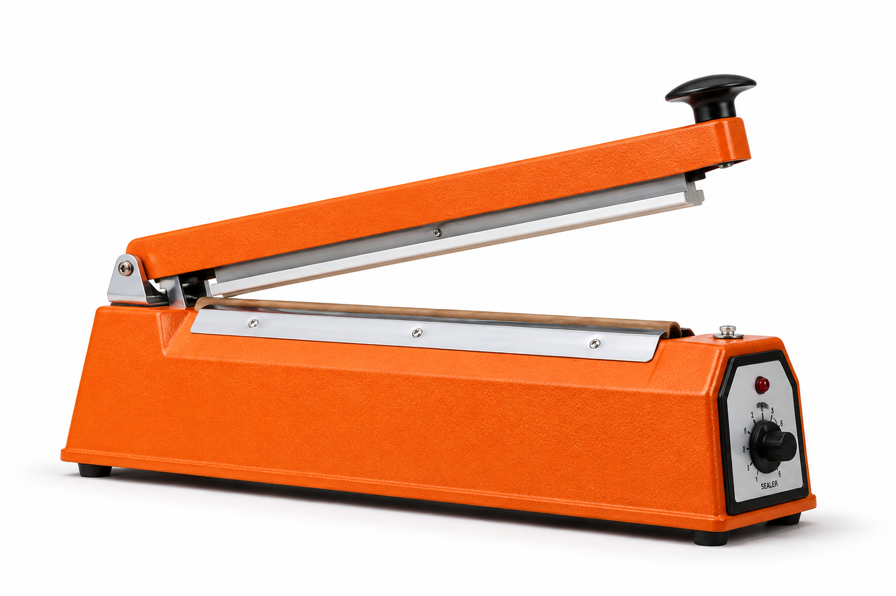
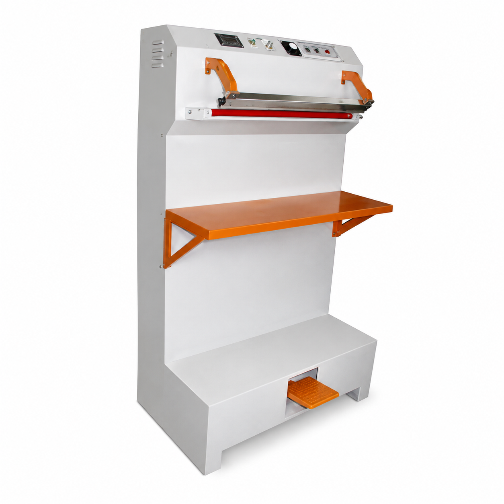
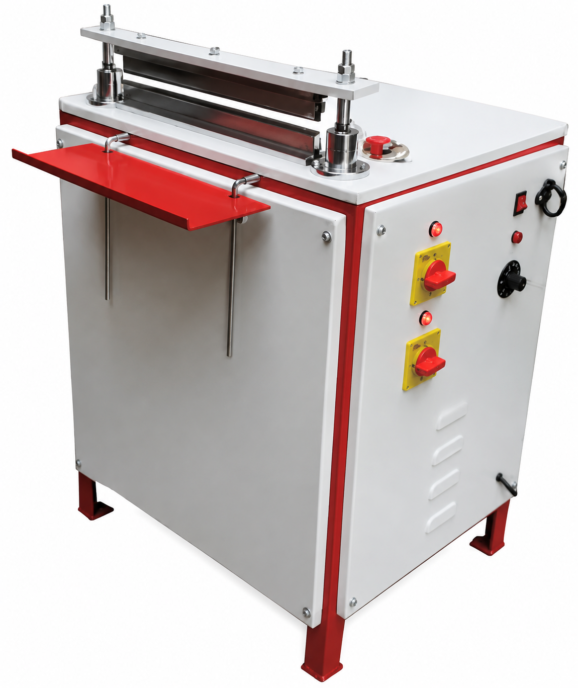
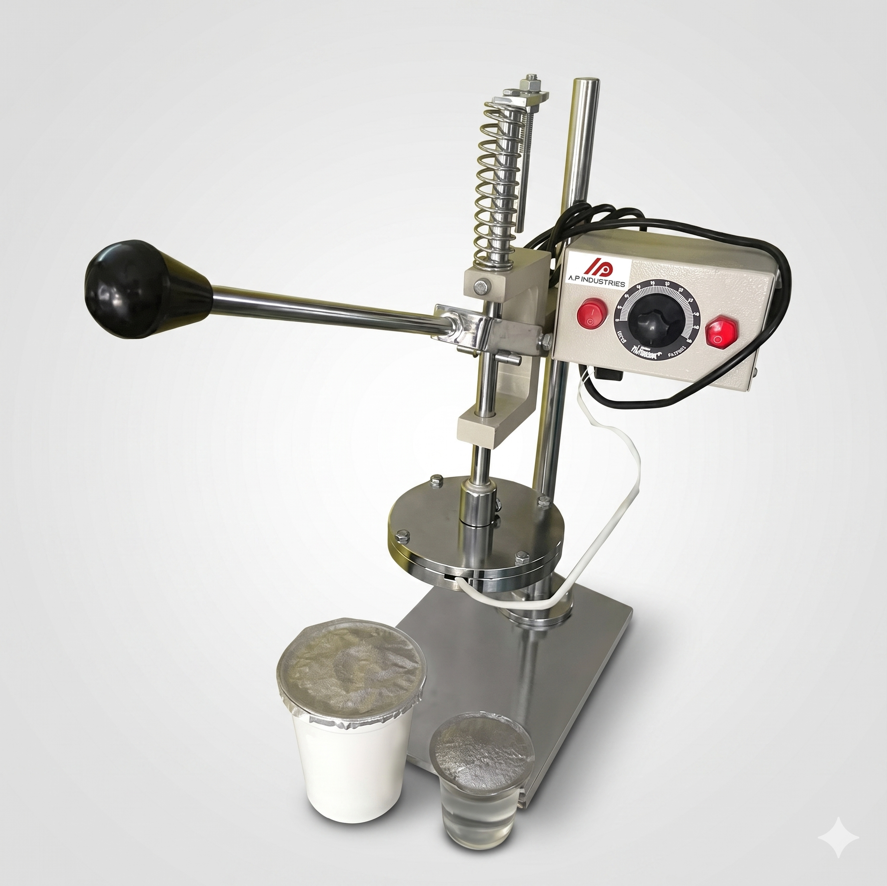
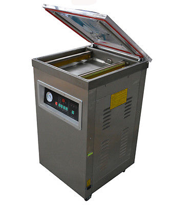
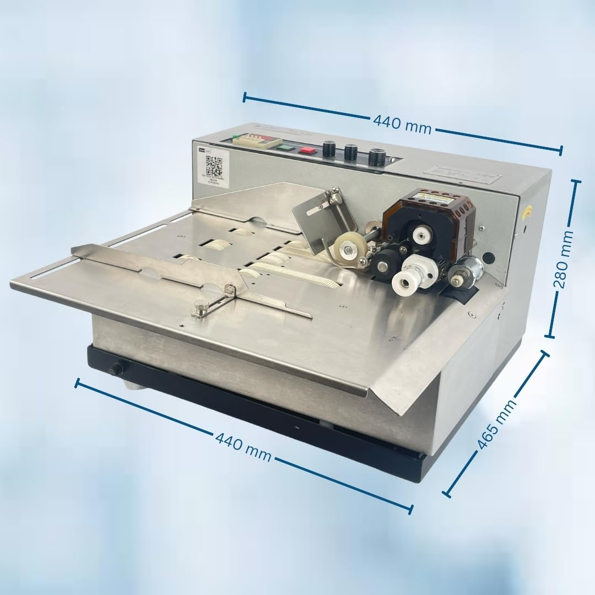
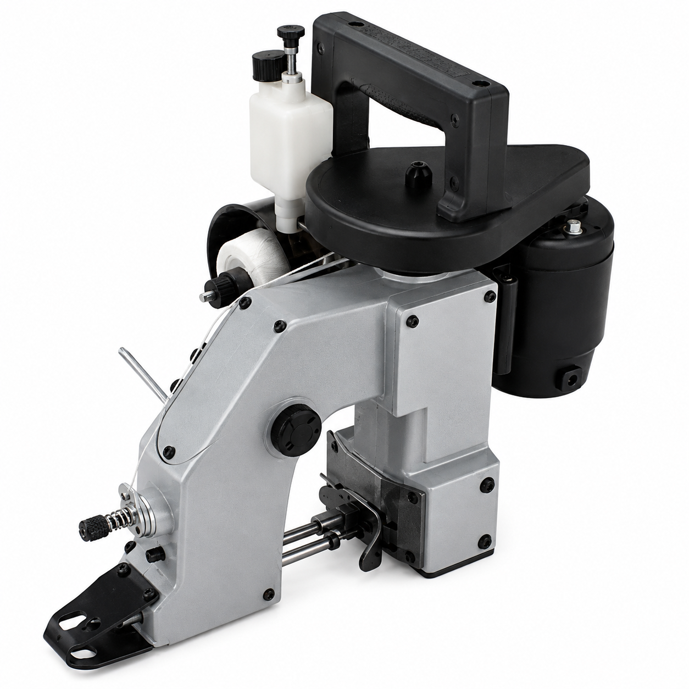

Packaging Machinery Products
Detailed technical specifications of our full packaging equipment range. Use the form at the bottom of the page to request quotes.

Hand Operated Sealing Machine (Hand Sealer)
A Hand Sealer Machine from A.P. Industries is a compact and portable sealing solution designed for sealing plastic bags, pouches, and laminated packaging materials. It provides strong, airtight, and tamper-proof seals, making it ideal for small-scale packaging, retail stores, food processing units, pharmaceutical applications.
Specifications
- Sealing Length: 200 mm to 750 mm
- Seal Width: 1.6 mm / 5 mm
- Power: 230V AC, 50 Hz
- Operation: Manual - Hand Operated

Hand Operated Portable Sealer
The Portable Mobile Sealer Machine from A.P. Industries is a versatile and efficient sealing solution designed for on-site packaging and large or heavy bags that cannot be moved to a stationary sealing machine. Its compact, lightweight, and mobile design enables easy operation across warehouses, manufacturing units, logistics centres, and packaging facilities.
Specifications
- Sealing Length: Customised
- Seal Width: Customised
- Power: 220–240 V AC, 50/60 Hz
- Operation: Manual - Hand Operated
.jpg)
Foot Sealer Machine (Box Type)
Heavy-duty Foot Oparated Impulse & Hotbar sealing system with a box type and Pipe type body structures options.
Specifications
- Sealing Length: Customised
- Seal Width: Customised
- Power: 220–240 V AC, 50/60 Hz
- Operation: Manual - Foot Operated

Vertical Foot Sealer Machine
The Vertical Foot Sealer Machine from A.P. Industries is a robust and efficient sealing solution designed for sealing large, heavy, and bulky bags in an upright position. Operated by a foot pedal, it enables hands-free operation, making it ideal for packaging products that are difficult to handle on conventional sealing machines. Widely used across manufacturing, food processing, pharmaceuticals, chemicals, and agricultural industries, it ensures strong, uniform, and leak-proof seals.
Specifications
- Sealing Length: Customised
- Seal Width: Customised
- Power: 220–240 V AC, 50/60 Hz
- Operation: Manual - Foot Operated

Pneumatic Sealing Machine
The Pneumatic Sealing Machine from A.P. Industries is a high-performance sealing solution designed for fast, consistent, and efficient sealing of thermoplastic packaging materials. Powered by compressed air, it delivers uniform sealing pressure with minimal operator effort, making it ideal for medium to high-volume production environments. It is widely used in the food, pharmaceutical, chemical, electronics, textile, and industrial packaging sectors.
Specifications
- Sealing Length: Customised
- Seal Width: Customised
- Power: 220–240 V AC, 50/60 Hz
- Operation: Pneumatic - Foot Operated

Motorised Sealing Machine
A Motorised Sealing Machine from A.P. Industries is a high-performance sealing solution designed for continuous and efficient sealing of plastic bags, laminated pouches, and packaging films. Equipped with a motor-driven sealing mechanism, it delivers consistent seal quality with minimal operator effort, making it ideal for medium to high-volume packaging operations across various industries.
Specifications
- Sealing Length: Customised
- Seal Width: Customised
- Power: 220–240 V AC, 50/60 Hz
- Operation: Motorised

Continuous Band Sealer
Continuous Sealing Machines are designed for high-speed, continuous sealing of plastic bags and laminated pouches with consistent seal quality. These machines are ideal for medium and large-scale packaging operations where speed, precision, and reliability are essential. Equipped with an electronic temperature control system and variable conveyor speed, they ensure strong, leak-proof seals for a wide range of packaging materials.
Specifications
- Sealing Speed: Up to 12 m/min
- Seal Width: 8–12 mm
- Power: 230V AC, 50 Hz
- Operation: Manual - Continues Motorised

Manual Foil Sealer Machine
A.P. Industries Manual Foil Sealer Machines are designed to provide reliable induction sealing for plastic and glass containers using aluminum foil seals. These machines create tamper-evident, leak-proof, and airtight seals that protect products from moisture, contamination, and leakage, making them ideal for low to medium-volume packaging applications. Our manual foil sealers are easy to operate, energy-efficient, and suitable for a wide range of industries requiring safe and hygienic packaging.
Specifications
- Sealing Dia Size: Customised
- Sealing Method: Electric Heating Coil
- Power: 230V AC, 50 Hz
- Operation: Manual - Hand Operated

Manual Tray & Cup Sealer Machine
A.P. Industries Manual Tray & Cup Sealer Machines are designed for sealing plastic trays, plastic containers and cups with precision, ensuring hygienic, leak-proof, and attractive packaging. Ideal for low to medium-volume production, these machines are widely used in the food, dairy, beverage, and hospitality industries. Their compact design, simple operation, and consistent sealing performance make them an economical choice for businesses seeking reliable packaging solutions.
Specifications
- Sealing Dia Size: Customised
- Sealing Method: Electric Heating Coil
- Power: 230V AC, 50 Hz
- Operation: Manual - Hand Operated

Manual Induction Sealer
Manual Induction Sealer Machines are designed to provide fast, efficient, and reliable induction sealing for plastic and glass containers using aluminum foil liners. Utilizing advanced electromagnetic induction technology, these machines create airtight and tamper-evident seals that protect products from leakage, moisture, contamination, and pilferage. They are ideal for low to medium-volume production and are widely used across food, pharmaceutical, cosmetic, chemical, and agro industries.
Specifications
- Sealing Dia Size: 20 mm – 130 mm
- Sealing Method: Electromagnetic Induction Coil
- Power: 230V AC, 50 Hz
- Operation: Manual - Hand Operated

Continuous Induction Sealer
Continuous Induction Sealer Machines are engineered for high-speed, non-contact induction sealing of plastic and glass containers fitted with aluminum foil liners. Designed for continuous production lines, these machines deliver airtight, leak-proof, and tamper-evident seals, ensuring maximum product protection and extended shelf life. They are ideal for medium to high-volume packaging operations across food, pharmaceutical, cosmetic, chemical, and agro industries.
Specifications
- Sealing Dia Size: 20 mm – 130 mm
- Sealing Method: Electromagnetic Induction Coil
- Power: 230V AC, 50 Hz / 415V AC, 50 Hz
- Operation: Automatic Continuous Conveyor Type

DZ-260 Vacuum Packing Machine
DZ-260 Vacuum Packing Machine is a compact tabletop chamber vacuum sealer designed for efficient vacuum packaging of food, pharmaceuticals, electronics, chemicals, and industrial products. The machine automatically performs vacuuming, sealing, and cooling in a single cycle, ensuring airtight packaging that extends product shelf life while protecting against moisture, oxidation, and contamination. DZ-260 models commonly feature a 260 mm sealing bar and compact chamber dimensions suitable for small to medium production environments.
Specifications
- Sealing Length: 260 mm
- Seal Width: 8–10 mm
- Power: 220–230V AC, 50 Hz
- Operation: Automatic Chamber Type

DZ-400 Vacuum Packing Machine
DZ-400 Vacuum Packing Machine is a robust single-chamber vacuum packaging machine designed for medium to high-volume packaging operations. It automatically performs vacuuming, sealing, cooling, and air release in one cycle, ensuring airtight, leak-proof, and hygienic packaging. Ideal for preserving food, pharmaceuticals, electronic components, and industrial products, the DZ-400 significantly extends product shelf life by protecting against moisture, oxidation, contamination, and spoilage.
Specifications
- Sealing Length: 400 mm
- Seal Width: 10 mm
- Power: 220–230V AC, 50 Hz
- Operation: Automatic Chamber Type

DZ-500 Vacuum Packing Machine
DZ-500 Vacuum Packing Machine is a high-performance single-chamber vacuum packaging machine designed for medium to high-volume packaging applications. It automatically performs vacuum extraction, sealing, cooling, and air release in one efficient cycle, ensuring airtight, leak-proof, and hygienic packaging. The DZ-500 is ideal for preserving food, pharmaceuticals, electronics, chemicals, and industrial products by protecting them from moisture, oxidation, contamination, and spoilage while significantly extending shelf life. Typical DZ-500 models feature a 500 mm sealing bar, dual sealing bars, and a 20 m³/h vacuum pump, making them suitable for demanding commercial
Specifications
- Sealing Length: 500 mm
- Seal Width: 10 mm
- Power: 220–230V AC, 50 Hz
- Operation: Automatic Chamber Type

Shrink Tunnel Machine
Shrink Tunnel Machines are designed to deliver high-quality heat shrink packaging for a wide range of products. By applying controlled hot air, the machine shrinks PVC, POF, or LD (PE) shrink film tightly around products, creating secure, attractive, and tamper-evident packaging. Suitable for medium and high-volume production, our Shrink Tunnel Machines provide excellent packaging consistency, increased productivity, and superior product protection.
Specifications
- Tunnel Size: Customised
- Heating System: Electric Hot Air Circulation
- Power: 230V AC / 415V AC, 50 Hz
- Operation: Semi / Auto

Web Sealer Shrink Tunnel Machine
Web Sealer with Shrink Tunnel Machine is a fully integrated packaging solution designed for high-speed bundling and shrink wrapping of cartons, bottles, cans, jars, trays, and other products. Combining a web sealing unit with a heat shrink tunnel, this machine produces strong, tamper-evident, and professional-looking packages in a single continuous operation. It is ideal for medium to high-volume production lines where speed, reliability, and packaging quality are essential. Modern web sealer systems commonly support adjustable sealing, tunnel temperature, and conveyor speed to accommodate various product sizes and shrink films.
Specifications
- Tunnel Size: Customised
- Heating System: Electric Hot Air Circulation
- Power: 415V AC, 50 Hz, Three Phase
- Operation: Semi / Auto

Semi Automatic Strapping Machine
Semi Automatic Strapping Machines are designed to provide quick, secure, and efficient strapping for cartons, boxes, bundles, and packages. These machines use PP (Polypropylene) strapping to ensure firm and consistent package fastening, improving product safety during storage and transportation. Ideal for medium-volume packaging operations, they offer high productivity, simple operation, and low maintenance, making them suitable for warehouses, logistics centers, manufacturing units, and packaging industries.
Specifications
- Strap Width: 6 - 15 mm
- Tension Force: Adjustable
- Power: 230V AC, 50 Hz
- Operation: Semi-Automatic

Fully Automatic Strapping Machine
Fully Automatic Strapping Machines are engineered to provide fast, reliable, and fully automated strapping for cartons, boxes, bundles, and packaged products. Designed for high-volume production lines, these machines automatically feed, tension, seal, and cut the strap in a single cycle, ensuring secure and consistent packaging with minimal operator intervention. They are ideal for industries that demand high productivity, precision, and continuous operation.
Specifications
- Strap Width: 9 - 15 mm
- Tension Force: Adjustable
- Power: 230V AC / 415V AC, 50 Hz
- Operation: Fully Automatic

HP-241 Batch Coding Machine
HP-241 Batch Coding Machine is a compact and efficient hot ribbon coding machine designed for printing Manufacturing Date (MFG), Expiry Date (EXP), Batch Number, Lot Number, MRP, Price, and other product information on flexible packaging materials. Using thermal hot ribbon technology, it delivers clean, smudge-free, and long-lasting prints without the use of liquid ink, making it an ideal solution for food, pharmaceutical, cosmetic, chemical, and FMCG industries. HP-241 machines typically support 1 to 3 lines of printing, adjustable temperature control, and printing speeds ranging from 20–120 prints per minute, depending on the model.
Specifications
- Printing Method: Thermal Hot Ribbon Printing
- Printing Area: Up to 12 × 35 mm
- Power: 220–230V AC, 50 Hz
- Operation: Semi-Automatic

MY-380 Batch Coding Machine
MY-380 Batch Coding Machine is a high-speed automatic solid ink coding machine designed for printing Manufacturing Date (MFG), Expiry Date (EXP), Batch Number, Lot Number, MRP, Price, and other product information on flexible packaging materials. Utilizing advanced solid ink roller technology, the MY-380 delivers clear, smudge-free, instant-drying prints with excellent adhesion, making it an ideal solution for continuous production lines in the food, pharmaceutical, cosmetic, chemical, and FMCG industries. MY-380 machines are commonly capable of printing up to 300 prints per minute, depending on the product size and application.
Specifications
- Printing Method: Hot Ink Roller Printing
- Printing Area: Up to 60 × 250 mm
- Power: 220V AC, 50 Hz
- Operation: Automatic / Continuous

Bag Closer Machine
Bag Closer Machines are designed for efficient and secure stitching of filled bags used in food processing, agriculture, chemicals, fertilizers, animal feed, textiles, and other industrial applications. Built for continuous operation, these machines provide strong, uniform stitching to ensure safe handling, storage, and transportation of packaged products. Available in Single Thread and Double Thread models, they offer reliable performance for various packaging requirements.
Specifications
- Stitch Type: Chain Stitch
- Thread Type: Cotton / Polyester / Synthetic Thread
- Power: 220–230V AC, 50 Hz
- Operation: Manual - Hand Operated

Fully Automatic Pouch Packing Machine
Fully Automatic Pouch Packing Machines are designed to deliver fast, accurate, and efficient pouch packaging for a wide range of powders, granules, liquids, and semi-liquid products. Engineered with advanced automation technology, these machines automatically perform forming, filling, sealing, cutting, and pouch discharge in a single continuous operation. Ideal for medium to high-volume production, they ensure consistent packaging quality, reduced labor costs, and maximum productivity across various industries.
Specifications
- Filling System: Auger / Volumetric Cup / Multi-Head Weigher / Liquid Filling
- Pouch Width: 50–250 mm
- Power: 230V AC / 415V AC, 50 Hz
- Operation: Required for Pneumatic Models

Stretch Wrapping Machine
Stretch Wrapping Machines are designed to provide fast, consistent, and secure wrapping of palletized loads using stretch film. These machines ensure excellent load stability, protecting products from dust, moisture, tampering, and transportation damage. Ideal for warehouses, manufacturing units, logistics centers, and export packaging, our stretch wrapping machines improve packaging efficiency while reducing film consumption and labor costs.
Specifications
- Wrapping Method: Turntable Type
- Turntable Diameter: 1500 mm / 1650 mm
- Power: 230V AC / 415V AC, 50 Hz
- Operation: Semi / Fully Automatic

Pallet Stretch Wrapping Machine
Pallet Stretch Wrapping Machines are designed to provide efficient and reliable wrapping of palletized goods using stretch film. Engineered for industrial packaging applications, these machines ensure maximum load stability, protecting products from dust, moisture, tampering, and transportation damage. Suitable for warehouses, manufacturing plants, logistics centers, and export packaging, our pallet stretch wrapping machines improve productivity while reducing packaging costs and film consumption.
Specifications
- Wrapping Method: Turntable Type
- Turntable Diameter: 1500 mm / 1650 mm / 1800 mm
- Power: 230V AC / 415V AC, 50 Hz
- Operation: Semi / Fully Automatic

Fully Automatic L Sealer Machine
Fully Automatic L Sealer Machines are designed for high-speed shrink wrapping applications, providing precise sealing and efficient packaging for a wide range of products. Integrated with a shrink tunnel, these machines automatically feed, seal, and wrap products in shrink film, delivering attractive, tamper-evident, and protective packaging. They are ideal for medium to high-volume production lines in food, pharmaceuticals, cosmetics, electronics, printing, and FMCG industries.
Specifications
- Sealing Type: L-Bar Heat Sealing
- Film Type: POF / PVC Shrink Film
- Power: 415V AC, 50 Hz, Three Phase
- Operation: Fully Automatic
Get an Instant Quotation
Request catalog files, exact price sheets, or custom modifications. Please list the machine model names of interest (e.g. DZ260, Fully Auto Strapping) in the text area.
Our sales engineering division reviews all requests and replies within 1 business day with comprehensive technical drawings and cost breakdowns.